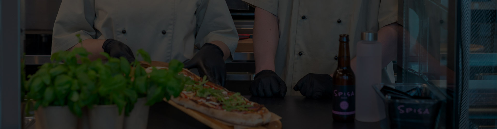

Du väljer sås, ost, grönsaker och proteiner precis som du vill – bland våra 40 ingredienser finns många av dina favorittoppings. Med andra ord har du full frihet oavsett om du är vegetarian, vegan, fiskätare eller gillar kött. Den krispiga degen är av högsta kvalitet, helt utan olja och gjord på extra fint mjöl. Dessutom jäser degen hela 48 timmar innan den tillagas.
När du valt vad du vill ha förbereder personalen din pizza vid vår glasdisk – restaurangens hjärta. Den gräddas sedan i ett par minuter i den supersnabba och toppmoderna ugnen innan den rykande het serveras färdigskuren i bitar på träbricka. Tiden från beställning till färdig pizza? Oslagbara 3 minuter! Mer snabbmat än så kan det knappast bli.
Hos oss på Spisa Pizza är alla välkomna – barnfamiljer som fredagsmyser, lunchande kollegor, hungriga kompisgäng, par på dejt och alla andra som är sugna på grymt god pizza och härlig stämning. Släpp loss kreativiteten – vi ser fram emot att se vem som är gängets bästa pizzakreatör och som sedan stolt kan bjuda sitt sällskap på sin innovativa skapelse. För pizza är ju till för att delas!
Givetvis kan du också ta med din pizza som take away. Perfekt som lunch på jobbet, kvällsmat hemma eller för en picknick i parken.
Miljöfrågor och hållbarhet ligger oss varmt om hjärtat. Vi använder ekologiska kvalitetsråvaror så långt det är möjligt. Plast undviker vi helt och eftersom pizzan serveras direkt på träbrickor behövs varken tallrikar eller bestick. Skulle du ändå vilja använda detta så är allt gjort i papp.
Och tack vare att pizzorna är rektangulära krävs betydligt mindre material till take away-kartongerna – en lika viktig ingrediens som tomatsås och ost i receptet på framtidens pizza. Dessutom är de avlånga lådorna både smidigare att ta med sig, äta ur och slänga jämfört med klassiska pizzakartonger.
Varmt välkommen till oss på Spisa Pizza! Här får du inte bara en fantastiskt god personlig pizza utan en hel upplevelse. Mat och miljö skapar tillsammans det vi tycker ger guldkant på tillvaron – att spisa.
PS. Om fantasin tryter har vi självklart även färdiga kombinationer på menyn. Och sallad bowls.